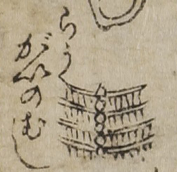

病気；ビョウキ，虫；ムシ，労咳；ロウガイ

労咳の虫。柵状で連結部には丸い器官のようなものがある。
出典：親書誌：U426_nichibunken_0017：セメンエン；セメンエン／日付：2006／資源識別子：U426_nichibunken_0017_0010_0000
Copyright (c)2010- International Research Center for Japanese Studies, Kyoto, Japan. All rights reserved.